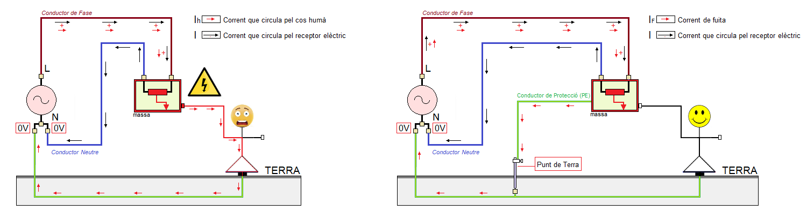

Connexió de les masses al punt de terra
El punt de terra ofereix al corrent elèctric un camí alternatiu de molt baixa resistència. D'aquesta manera, si toquem una part metàl·lica que accidentalment està en tensió, com pot ser la carcassa d'un ordinador, i aquesta carcassa (massa) està correctament posada a terra, el corrent elèctric circularà cap al punt de terra pel conductor de protecció i no travessarà el nostre cos (veure imatge).

En la imatge anterior hem representat la situació ideal on tot el corrent circula cap al punt de terra pel conductor de protecció. La realitat es que una petita part del corrent continuarà circulant pel cos humà i aquest percentatge dependrà de la relació existent entre les resistències del punt de terra i del cos humà, es a dir, quan més petita sigue la resistència del punt de terra menys quantitat de corrent circularà pel cos humà.
Des d'un punt de vista de la seguretat de les persones el problema està resolt amb la connexió de les masses al punt de terra. Ara bé, la instal·lació continua tenint un problema d'aïllament que es manifesta amb un corrent que circula pel conductor de protecció fins al punt de terra.
S'anomena corrent de fuita (IF) al corrent que circula pel conductor de protecció.
Tota instal·lació elèctrica on hi han corrent de fuites té un problema en els aïllaments d'algun o alguns dels seus receptors elèctrics.
Un altra manifestació de l'existència de corrents de fuita (IF) en una instal·lació elèctrica és el diferent valor que tenen les intensitats que circulen pel conductor de fase i pel conductor neutre: IL=IN+IF.